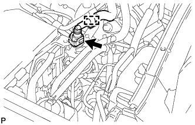
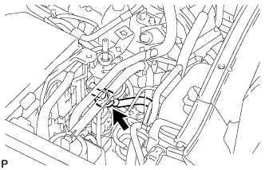
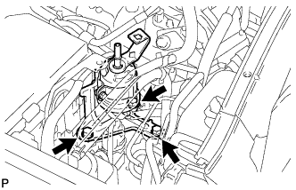

FUEL FILTER > REPLACEMENT |
| 1. DISCHARGE FUEL SYSTEM PRESSURE |
 |
Disconnect the 2 fuel pump ECU connectors.
Connect the cable to the negative (-) battery terminal.
Start the engine. After the engine has stopped on its own, turn the engine switch off.
Crank the engine again, and then check that the engine does not start.
Loosen the fuel tank cap, and then discharge the pressure in the fuel tank completely.
Disconnect the cable from the negative (-) battery terminal.
| Condition | Waiting Time |
| Vehicle enrolled in G-BOOK system | 6 minutes |
| Vehicle not enrolled in G-BOOK system | 1 minute |
Connect the 2 fuel pump ECU connectors.
| 2. DISCONNECT CABLE FROM NEGATIVE BATTERY TERMINAL |
| Condition | Waiting Time |
| Vehicle enrolled in G-BOOK system | 6 minutes |
| Vehicle not enrolled in G-BOOK system | 1 minute |
| 3. REMOVE ENGINE ROOM SIDE COVER LH |
 |
Remove the 4 clips and engine room side cover LH.
| 4. DISCONNECT FUEL HOSE |
Disconnect the hose from the clamp.
|  |
Disconnect the fuel hose (Click here).
| 5. DISCONNECT FUEL MAIN TUBE |
|  |
Disconnect the fuel main tube (Click here).
| 6. REMOVE FUEL FILTER ASSEMBLY |
|  |
Remove the 3 bolts and fuel filter.
| 7. INSTALL FUEL FILTER ASSEMBLY |
Install the fuel filter with the 3 bolts.
| 8. CONNECT FUEL MAIN TUBE |
Connect the fuel main tube (Click here).
| 9. CONNECT FUEL HOSE |
Connect the fuel hose (Click here).
Connect the hose to the clamp.
| 10. INSTALL ENGINE ROOM SIDE COVER LH |
Install the engine room side cover LH with the 4 clips.
| 11. CONNECT CABLE TO NEGATIVE BATTERY TERMINAL |
| 12. INSPECT FOR FUEL LEAK |
Make sure that there are no fuel leaks after performing maintenance on the fuel system.
Connect the intelligent tester to the DLC3.
Turn the engine switch on (IG) and turn the intelligent tester on.
Enter the following menus: Powertrain / Engine and ECT / Active Test / Control the Fuel Pump / Speed.
Check that there are no leaks from the fuel system.
If there are fuel leaks, repair or replace parts as necessary.
Turn the engine switch off.
Disconnect the intelligent tester from the DLC3.